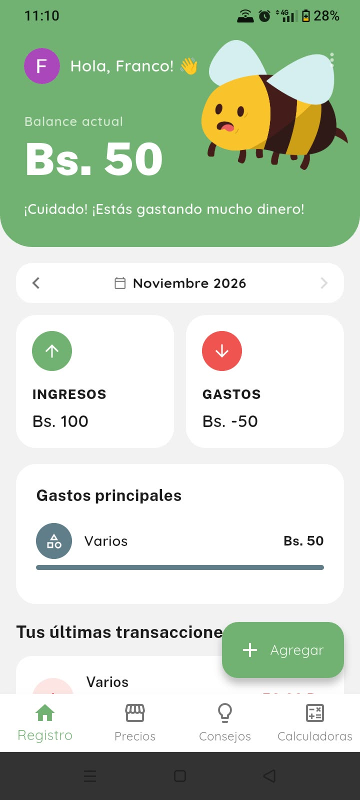
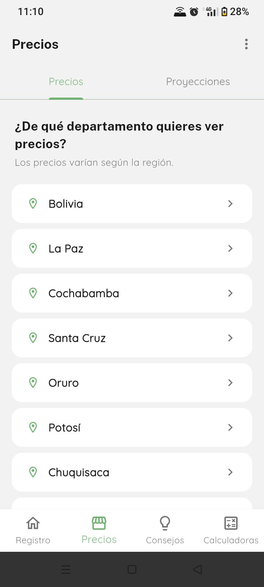
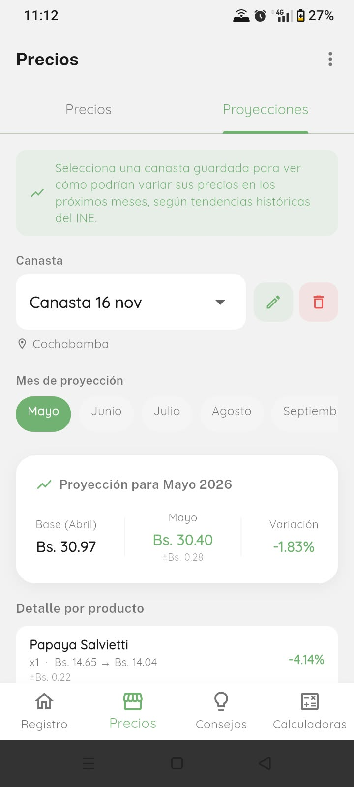
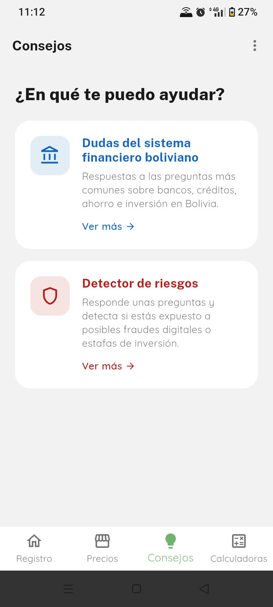
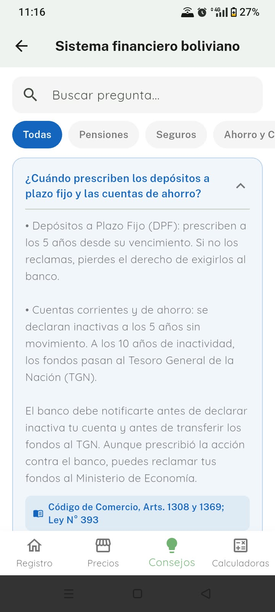
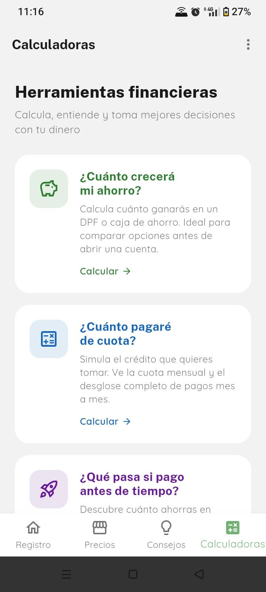
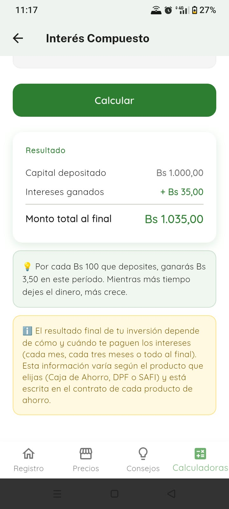
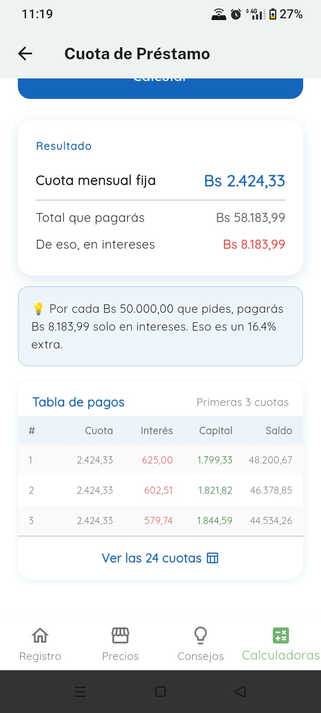
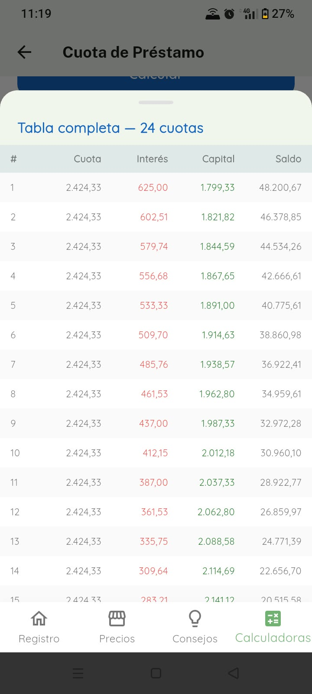
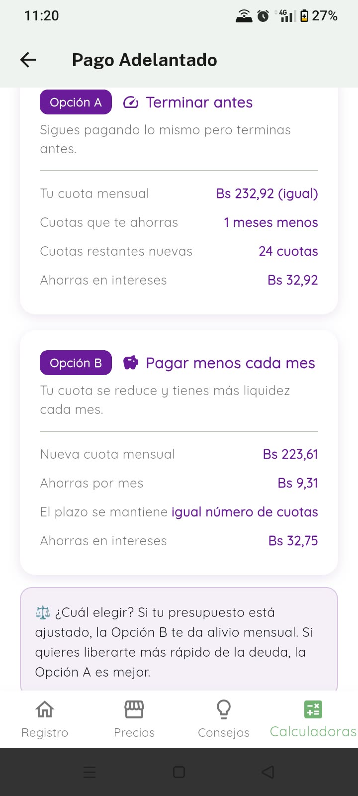

Aprende a gestionar las finanzas de tu emprendimiento con Yupay
La herramienta perfecta para todos los que desean gestionar de forma inteligente los ingresos y egresos de sus emprendimientos. Aprende a usar Yupay y toma el control de tus finanzas con claridad y confianza.
¿Qué aprenderás?
Guía de Registros
Aprende a registrar ingresos y gastos diarios de forma ordenada en Yupay.
Guía de Precios
Revisa proyecciones de precios del INE por región y cuida tus márgenes.
Guía de Consejos
Usa el detector de riesgos financieros y mantén tu negocio protegido.
Guía de Calculadoras
Simula préstamos, tablas de amortización y calcula el interés compuesto.
Control de tu negocio
Aprende a registrar cada movimiento de tu negocio de forma ordenada usando Yupay. Un registro preciso es la base de unas finanzas saludables.
Paso a paso: Registrar un movimiento
-
1
Toca el botón verde "+ Agregar" en la pantalla principal de Yupay. Encontrarás este botón en la esquina inferior derecha de la app.
-
2
Selecciona si es Ingreso o Gasto. Los ingresos son entradas de dinero (ventas, cobros). Los gastos son salidas (compras, servicios, pagos).
-
3
Escribe el monto exacto de la transacción. Usa punto o coma decimal según corresponda (ej: Bs. 150,50).
-
4
Agrega una descripción breve (ej: "Venta de pan", "Compra de harina"). Esto te ayudará a identificar el movimiento en tus reportes.
-
5
Confirma y guarda. Yupay registrará automáticamente la fecha y hora. El movimiento aparecerá en tu historial de inmediato.

Separa siempre el dinero del negocio del dinero personal. Registra cada retiro que hagas para uso personal como un gasto con la categoría "Retiro del propietario". Mezclar ambas finanzas es uno de los errores más comunes en emprendimientos pequeños y dificulta conocer la rentabilidad real de tu negocio.
Precios y Canasta
Yupay te muestra las proyecciones de precios de la canasta básica del INE por departamento. Usa esta información para ajustar tus precios de venta a tiempo.
Paso a paso: Consultar proyecciones del INE
-
1
Ingresa a la sección "Precios" desde el menú principal de Yupay (ícono de gráfica de barras).
-
2
Selecciona tu departamento en el selector desplegable. Los datos del INE se actualizan mensualmente para cada región del país.
-
3
Revisa la proyección del mes actual y el siguiente. Verás qué productos de la canasta básica tienen tendencia al alza (flecha roja) o a la baja (flecha verde).
-
4
Compara con tus costos registrados. Yupay cruza automáticamente los insumos que ya registraste con los precios del INE para alertarte si tu margen está en riesgo.


Ajusta tus precios de venta si suben los insumos. Muchos emprendedores mantienen el mismo precio de venta por miedo a perder clientes, absorbiendo el aumento de costos en su propio bolsillo. Revisa tu estructura de costos cada mes: si el costo de producción sube un 10%, tu precio de venta debe reflejar al menos una parte de ese incremento para mantener la rentabilidad.
Consejos y Seguridad
Yupay incluye un detector de riesgos financieros y un asistente de dudas para proteger tu negocio de malas decisiones y posibles fraudes.
Paso a paso: Usar el detector de riesgos
-
1
Accede a la sección "Consejos" desde el menú inferior de la app. Verás el panel de alertas activas para tu negocio.
-
2
Lee las alertas de riesgo personalizadas. Yupay analiza tus registros y te avisa si detecta patrones preocupantes: gastos que superan ingresos, stock bajo, o pagos atrasados frecuentes.
-
3
Usa el asistente de dudas financieras. Escribe tu pregunta en lenguaje simple (ej: "¿Qué es el IGV?", "¿Cómo calculo mi ganancia?") y recibirás una explicación clara y adaptada al contexto boliviano.
-
4
Marca las alertas como atendidas una vez que hayas tomado acción. Esto mantiene tu panel limpio y enfocado en los riesgos pendientes.


Evita los fraudes de inversión que prometen ganancias extraordinarias. Si alguien te ofrece duplicar tu dinero en pocos días o semanas, es una señal de alerta. Ninguna inversión legítima garantiza rendimientos tan altos sin riesgo. Antes de invertir el dinero de tu negocio, consulta con un contador certificado o con la ASFI (Autoridad de Supervisión del Sistema Financiero de Bolivia).
Calculadoras Financieras
Toma decisiones financieras inteligentes con el simulador de préstamos y la calculadora de interés compuesto integradas en Yupay.
Herramientas Financieras y Paso a Paso
-
1
Ingresa al menú de Calculadoras y Herramientas. Desde la barra de navegación de Yupay, accede al panel de herramientas financieras donde encontrarás el simulador de préstamos, cálculo de cuotas e interés compuesto.

-
2
Simulador de Préstamos: Ingresa el monto a solicitar, la tasa de interés anual (TEA) y el plazo en meses. Yupay calculará de inmediato tu cuota fija mensual estimada.

-
3
Tabla de Amortización: Desliza para revisar el desglose cuota a cuota. Observa con exactitud cuánto dinero va a la amortización de capital y cuánto a intereses.

-
4
Calculadora de Interés Compuesto: Proyecta el crecimiento de tu fondo de reserva o ahorros introduciendo el capital inicial, aportes periódicos y tasa anual.

-
5
Comparación de Escenarios y Pagos: Compara distintas combinaciones de tasa y tiempo para asegurarte de que la cuota sea sostenible para tu flujo de caja.

Revisa siempre la tabla de amortización antes de endeudarte. Muchos emprendedores solo miran la cuota mensual sin calcular cuánto pagarán en total al banco. Un préstamo de Bs. 10.000 a 36 meses al 18% TEA puede significar pagar más de Bs. 13.000 en total. Conocer el costo real del financiamiento te permite comparar opciones y elegir la más conveniente.
Glosario del Contador
Términos financieros clave explicados en lenguaje sencillo para emprendedores.
Es el interés que se calcula no solo sobre el capital inicial, sino también sobre los intereses acumulados en períodos anteriores. Es el principio detrás del crecimiento exponencial de los ahorros: "ganar intereses sobre los intereses". Ejemplo: Bs. 1.000 al 10% anual compuesto se convierten en Bs. 1.610 en 5 años.
Es el proceso de pago gradual de una deuda mediante cuotas periódicas que incluyen una parte de capital (el préstamo original) y una parte de intereses. Una tabla de amortización muestra exactamente cuánto se paga de cada componente en cada cuota durante la vida del crédito.
Es un instrumento de ahorro bancario en el que depositas una suma de dinero durante un plazo determinado (30, 60, 90 días, o más) a cambio de una tasa de interés fija. El banco no puede usar ese dinero antes del vencimiento y tú recibes el capital más los intereses al final del plazo. Es una de las opciones de inversión más seguras disponibles en Bolivia.
Registro de todas las entradas y salidas de dinero de un negocio en un período determinado. Un flujo de caja positivo significa que ingresan más fondos de los que salen. Es el indicador más importante de la liquidez diaria de tu emprendimiento.
Es la tasa de interés real que pagas por un préstamo o ganas por un depósito en un año, considerando la capitalización de intereses. Permite comparar productos financieros de distintos bancos de manera justa, independientemente de su frecuencia de cobro.
Conjunto de bienes (productos terminados, materias primas, insumos) que posee un negocio para su venta o uso en la producción. Llevar un control actualizado del inventario evita quiebres de stock, pérdidas por vencimiento y robos hormiga.